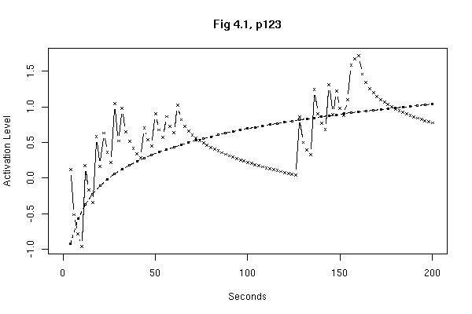

R Intro Cognitive Modeling
Last modification: 091109
Goal
Familiarize students with R so that can create (parts of) computational
cognitive models in R.
Literature
- An
Introduction to R (The R Intro)
- Reference
Card (Very useful)
- simpleR
Initial version of a book published as "Using R for Introductory
Statistics" by John Verzani. Useful introduction to doing statistics
in R.
- Using
R, another introductionary text, includes some information on the
environment, how to start R in Windows, etc.
Assignment
- Work through the exercises in Appendix A of the R Intro document.
Don't try to understand all the details, but try to get the feel of the
system, and familiarize yourself with the language. (Skip the part about
imaginary numbers.) To save you from spending all your time just typing
over examples, here you'll find the code of all the
exercises: R-intro-AppA.r, ready to be
cut-and-paste in R. For the exercises, you'll also need the
file morley.tab. Make sure that you put the file
in the right directory, otherwise R won't be able to find it. (You can
discover what your current working directory is by
typing getwd(), and, if necessary, change it by setting a new
path using setwd("/path/to/file").
- Start with the exercises in exercises.r. The
formulas you need for some of the later exercises can be found
in: ACT-R_equations.pdf
The figure for exercise 10 should look like this:

Hedderik van Rijn